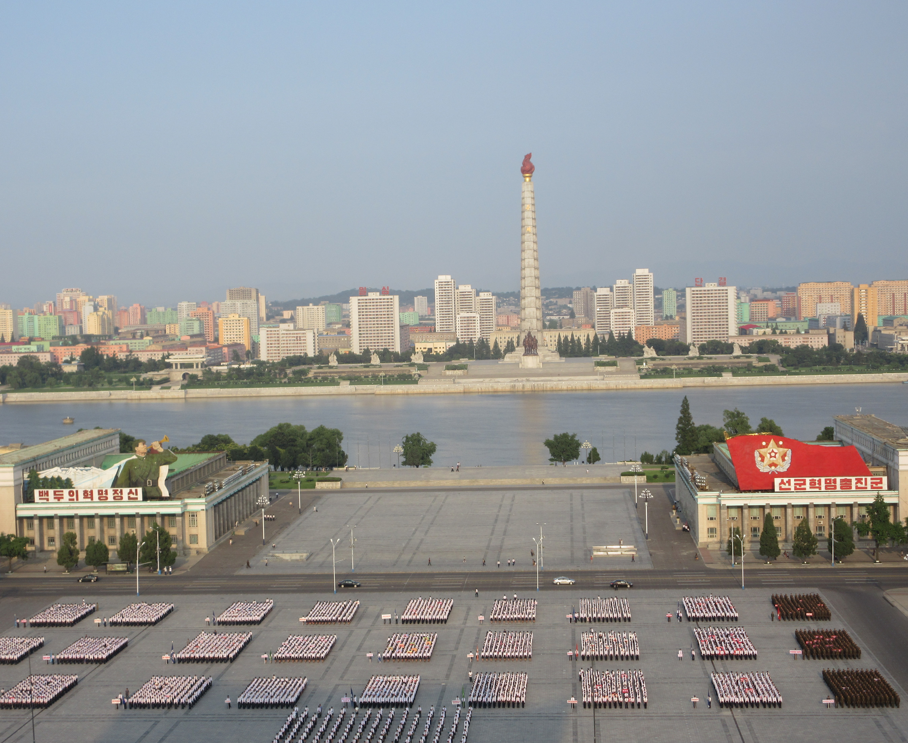

- TheUpRoutedBlog
- BLOG POSTS
- OUR ROUTES
- THE JOURNEY SO FAR
- VIDEO CHANNEL
- PHOTOGRAPHY ARCHIVE
Pelni: The Ultimate Indonesian Ferry Guide
By Brianna 03/May/17 Indonesia
On the Indonesian archipelago, there is no public transportation as sacred or as crucial as the Pelni. It's a budget travel essential and without them, our whole westward bound no-flights mission may have been in jeopardy before we'd even reached our second island. Having a few Pelnis under our belt, we naturally believe we are Indonesian ferry experts. I'm sure the internet would disagree...
All Pelnis begin as equals. You can quickly become accustomed to the same colours, same sticky leather mattresses and varying but ever-present unexplained array of odours. They quickly evolve, however, into distinct floating islands, some with 8pm karaoke discos, some with ping pong tables, some with actual running water etc. Needless to say, your Pelni experience is highly dependent on a lot of external factors beyond of your control. Every Pelni is a community with it's own unwritten customs and regulations, which can baffle outsiders into a state of despair. Of course, we made a lot of mistakes on our first Pelni. And every Pelni after that. Because no two Pelnis are the same, these tips in no way apply to all ships across the board. So far, it appears that two things unite all Pelnis: the mighty Pop Me and the indestructible cockroach. Everything else is a guessing game. Here's a few tips to help you improve the odds of having the ideal Pelni experience.
Pelni ferry routes and schedules
Everything works around the omnipotent Pelni. The buses know, the ojeks know, your hostel/hotel owner knows what's occurring and will gladly tell you when and where to go. People will prevent you from being late for a Pelni at all costs, which, in a country where time-keeping is not high on a list of priorities, isn't always a good thing.
Pelni information online
pelni.co.id
As a route map and ticket availability resource, you can't beat pelni.co.id. Ferries may have restrictive route combinations, but this website helps you time your travel plans perfectly. It has up-to-date information on whether tickets are available for your chosen day, and a list of alternate days either side your date to choose from if not.
ASDP
ASDP Indonesia ferries may be a great alternative if Pelni don't have your required route/you want to knock a few days off your travel time, you'll have to let us know. The website indonesiaferry.co.id looks the part, but we can vouch that the 'official' schedules posted are not always kept to.
I am currently sat writing this by the port waiting for a ferry which, according to ASDP, departs everyday at 11:00. We have been here 2 days. It is now 11:00 and I am looking out across a blank horizon. All we have to go on is that the locals think that there will be a ferry today. Things are not looking good. As this is Indonesia, however, your experience might be completely different. If you want to give it a go, we are under the impression that tickets only go on sale 2 hours before departure for ASDP, although we cannot confirm this as we have not yet found an open office.
Be prepared for scheduling issues
The problem here is that everyone thinks they know about Pelni and everybody wants to help you anyway they can. The truth is, however, not even the officials from Pelni know exactly what is going on. All you can do is arrive around 45 mins before your set departure time and hope for the best (or have a hotel/hostel close to the port so you can eat your breakfast in peace knowing your boat is not yet on the horizon). Also, always check the Pelni timetable online/in the office . We have been falsely sworn to that the Pelni goes on X day at Y time on numerous occasions. Do your own research.
Buying your ferry ticket
As a foreigner, you cannot buy tickets online easily. When we completed the booking process, we were given the option of paying for the tickets in a BRI (bank) branch with an online code within 2 hours. We attempted this to no avail and so lost our reservation. Give it a try, but if not you can buy them at the local Pelni office for any given day. From our limited experience, they have them in most port towns. A useful tip when buying Indonesian ferry ticets:
Check your arrival time
For example, ferries that go from Kupang, Timor, to Larantuka, Flores, take 10 hours. Ferries from Kupang, Timor, to Ende, Flores, can take 3+ DAYS . These destinations are around 7 hours by bus apart. It's all dependent on the ferry routes, so getting the right arrival time is just as important as the departure tima and day you want.
Getting to the ferry
Pelnis leaving early
Our first Pelni arrived early into the docks. We would have been completely unaware of this if our friend had not been buying a ticket for the same Pelni and was told to leg it to the port ASAP. We packed up as quickly as we could and followed suit. As told, the Pelni was already there. We weren't told, however, that the Pelni would still leave at exactly the same time and so we had left our hostel 3 hours early for no reason. It was an unnecessary rush but of minimal discomfort. Especially when compared against our second Pelni.
Pelnis arriving late
Pelni #2 did not get off to a great start. Of course, the fact that it was scheduled to leave at 3am didn't help. Set to be up at 2am, we were caught off guard when we heard a knock at the door at 1:20:
"Pelni is arriving early, you must go now" the owner of Ikhlas hotel, ,Ende, who had stayed up late to watch the British football, had informed us. Of course, we got dressed and left straight away. What's an extra 30 mins of no sleep anyway? The Pelni was 100% not early. We sat in the waiting room for a good couple of hours before we took to our home made sleeping mat on the floor like everybody else. The ferry rocked up at 9am the next morning. It left somewhere between 9am and 10am; we were too tired to care by this point.
Preparing for your Pelni
Now, bear in mind, not all Pelnis are sweaty hot boxes. But some are, so prepare for the worst and be pleasantly surprised. Here are some items to
What to bring
A bed sheet/sarong
A bed sheet/sarong
A sarong/ large, breathable piece of cloth is an essential Pelni carry-on. It puts some material between you and the sheer volume of buttocks the ancient leather mattresses you'll be fighting for have seen. It also soaks up your sweatiness and is a quick modesty booster for women. Sheets are sold from 50,00 Indonesian rupiah on board. A pillow may also come in handy. Be wary using camping equipment (sleeping bags etc.) as the stale smell of smoke is ripe and may cause a lingering negative impact on your nasal cavities. In fact, don't wear anything you care about smelling like an ash tray at all.
Snacks
We have had different experiences with food on our Pelnis. On a 20 hour crossing which turned into a full two days, we were served complimentary breakfast, lunch and dinner throughout. On others, everything had to be bought. There's a variety of (slightly expensive, sub-par quality) food at your fingertips at all times, but some good snacks help to improve any journey. Oreos and an avocado we could scape out with crisps guacamole style worked for us. Fresh stuff is lacking, so maybe stock up on fruit/veg if you're in it for the long-haul.
Patience
As previously mentioned, Pelnis can be trying for any person. Even with experience on trains in many developing countries (e.g. Indian Sleeper Class trains), Pelnis are a different kind of mental. If you are keeping to strict deadlines, the Pelni is probably not your ideal mode of transport. If you can handle the frustration, however, it is a great insight into Indonesian life and can spark a lot of adventures.
Some small notes
Why do your shopping in a mall when you can do it on board a Pelni? The vendors may get a bit tiresome at points, but you might be grateful for a rental electric fan, bed sheet, towel, bottle of water, iced mango juice etc. Plus, seeing your neighbours doing the bargaining dance over watches and sunglasses makes for great people watching.
Pelni Survival guide
You've made it on board your first Pelni. You've managed to get an actual ticket and the ferry has arrived. Well done you, the hard part's over. But what now?
Finding your territory
Like with many daytime TV programs, it's all about Location location location. There is a fine art to mat selection. It is important that you take the time to balance all the factors according to your tastes. Here's a few things we prioritise when embarking on this delicate mission:
Native wildlife.Certain areas of Pelnis are safaris for unsavoury critters. No matter where you go, you'll most likely have a run-in with at least one cockroach or rat, but keeping away from the corners and back walls will lessen your chances.
Chain Smokers It's difficult to see the "No Smoking" signs through the tobacco induced haze on some decks. If you are a smoker you might be in for a pleasant journey. For non-smokers it's not so great. Areas with proportionally more women and children are a good bet for avoiding the worst of it. Stay clear of large groups of single men (the kind of groups you would naturally avoid as a solo female traveller); they will be chaining dawn til dusk.
"You can't sit with us." On the whole, Pelni is a very family-orientated environment, and many people will invite you into their family with open arms. These are the neighbours you want if you don't mind the odd bit of breastfeeding, children bounding about playing 'the floor is lava'. Other groups will be completely disinterested in your presence on their mattress row. These people are great too; they give you a break from the same conversations. Other people, normally those sprawled across 3+ mats, will death stare you until you retreat from their row. Don't even try to find your assigned seat or move anyone onto a single mat. That is not the way of the Pelni.
Marking your territory
So, you've weighed all the mattress options up and found 'the one'. Now it's time to make some allies . Despite your best efforts to obey the unwritten rules of the Pelni, your foreign face and luggage are going to make the blending-in process impossible. Make friends early, introduce yourself to your neighbours, tell them your story, smile for the Paparazzi, hold the babies and be an all-round delight. Your journey will go all the better for it. Plus, once you're no longer a mystery most people won't even raise an eyebrow at you being there.
Bag Positioning The insect infested comers are probably the safest bets for big bags. Fortunately, however, Pelnis are very safe. No-one wants your smelly walking boots. The luggage racks above the mats (present on certain Pelnis) are big enough for a 65l rucksack and if you've got a chain, you can easily lock your belongings up there.
AlliesThe more the merrier, so if you meet other travellers on board you could stick together. This may have the unfortunate side-effect of distancing you from your other neighbours, but it does take the pressure off you as the centre of attention. It was a pleasure to embark on our first Pelni with our hostel friend Hank, a wisened travel veteran who had just visited his 192nd country.
Passing the time
There are plenty of ways to while away the time abroad a Pelni. Some people on the Pelni don't seem to move for days, but we desperately looked for ways to reduce our time in the downstairs sweat box. Hiding in the technically off-limits-but-you're-foreign-and-don't-know-better restaurant gives you a bit of a breeze and peace and quiet for a while. Around the ship, you might be able to join the onboard chess tournament, watch a film or spot flying fish, dolphins and maybe even whales in the ocean. There's always something going on. Hank even got us an invite to check out the bridge on our first Pelni:
If you're on a big Pelni, get yourself back to the restaurant area at 8PM , crack open an over-priced alcohol-free Bintang and enjoy the show. Or, do as Hank did and smuggle in your own Bintang - you'll enjoy the show a lot more. You can't beat a bit of Indo-pop Karaoke, especially when you've got a 10 year old boy belting out ballads like a Britain's Got Talent entry. You can shy away from it all you like, but someone will throw you onto the dance floor. We thought we were well hidden in the back corner until a 'Hello to our guests from Europe!' over the microphone made us the stars of the show. Every day at 12pm GMT, hundreds of people are attending their nightly Pelni disco, and tonight you get to be part of this institution: embrace the madness.
Disembarking the Pelni
Congratulations, you survived! That wasn't as bad as you thought, was it? Now, everyone will be in a hurry to get off. Best to slowly work your way through the pushing and shoving. Porters will force themselves through the crowds but there's not as much of a tourist trap vibe as you get in some countries. One porter even took us to the bus we needed to get. Which brings us onto the crowning jewel of the Pelni: your onward transport will be waiting for you, no matter what time of day it is. Even at 3am there will be bemos, ojeks, cars and long-distance buses mere metres away from the port to take you to your chosen destination. So don't worry about being stranded once you get there: transport really does revolve around the Pelni. This may not be the case everywhere but it certainly seems to be in NTT. I can even see the buses waiting at the port now for a ferry that isn't even going to show up today. That's commitment to the cause.
There you have it. The Pelni may feel overwhelming at first but you quickly settle in to the unique way of life that is so crucial to many travelling Indonesians. If you are on a no-flights mission such as us, there will be moments (or entire days) where the infrastructure will baffle you to tears, but integrating into such a diverse community of people journeying from every corner of the country gives you a real feel of what it's like to live on such a vast archipelago. Bon voyage and good luck!

13/November/2017, North Korea.

North Korea: A Peak Behind the Modern-day Iron Curtain
It's fair to say a summer holiday in North Korea isn't everybody's cup of tea. It's... unconv...
18/June/2017, Kyrgyzstan.

Curse of the Lakes II: Stood up at the mosque
After realising that the snow was settling in for the winter over the Kyrgyz high...